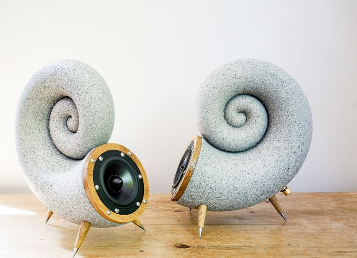
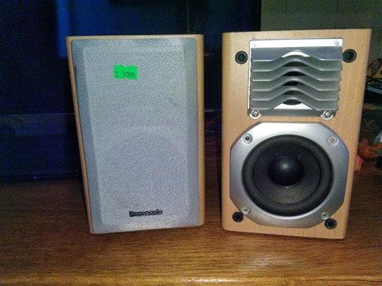
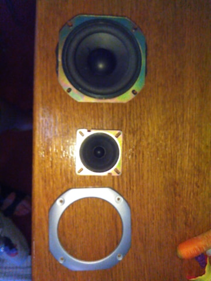
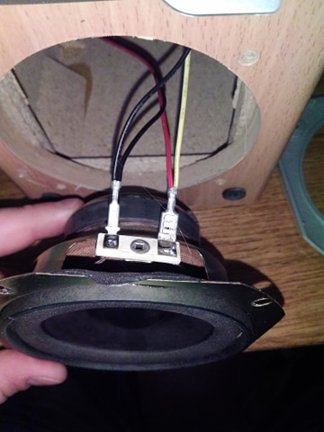
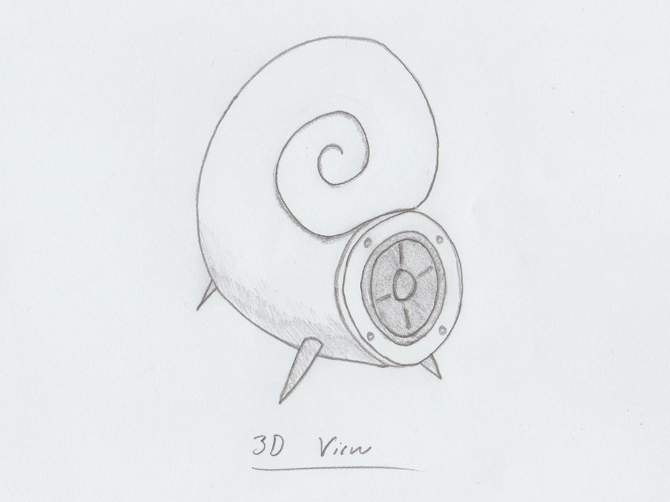
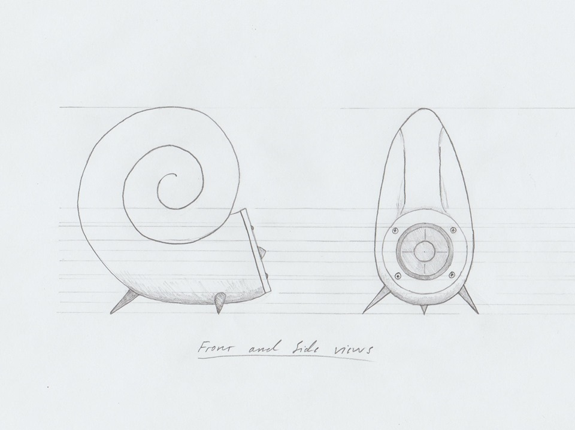
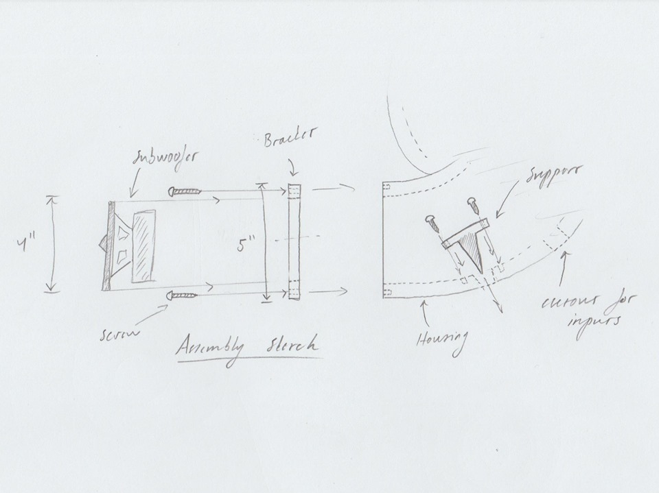

Næsta Mótorhjólið í safnið.
Hópurinn
Í Þessu verkefni er unnið í Hóp og stendur hópurinn saman af:
Birgir Steinn Hermansson - https://birgirsh.github.io/webpage/project1.html
Viktor Daði Úlfarsson - https://vdu1.github.io/lokaverkefni.html
Í þessu lokaverkefni, áfangans Framleiðsluferli ákvað hópurinn að búa til hátalara. Keyptur yrði sjálfur subwoofer en búið til gjörð utan um hann, svipað eins og sjá má á mynd hér að neðan. Eins og staðan er á þessum tímapunkti eru nánari upplýsingar á síðuni hans Birgis.
Efni sem verða fyrir valinu eru:
Þessi mynd er fengin af síðuni hér að neðan sem var nokkursskonar innblástur að þessu verkefni og má sjá hvernig þetta var gert hjá þeim. Er áætlunin að gera okkar eigin útgáfu er svipar til þessara.
Byrjað var að skoða hátalara og magnara á netinu og var skoðað síður eins og aliexpress. Fannst fullt af flottu dóti og auðvelt að eyða fullt fullt af penningum. Eftir að hafa skoðað þetta talsvert var ákveðið að fara í Góða hirðirinn og skoða hvort ekki væri hægt að fá eitthvað þar sem mætti nota. Fundust tveir hátalarar á 1000kr sem voru keyptir og má sjá á myndini hér að neðan. Beðið var með að kaupa magnara en til þess að hægt sé svo að tengja hátalarana þarf að kaupa banantengi og fást þeir í verslunini Íhlutir.
  Má svo sjá hér á myndum að neðan riss eftir Birgi af því hvernig við ætlum að teikna þetta.
  
Því miður gerðist það að COVID-19 faraldurinn skaut föstum rótum í samfélaginu sem lamaði alla starfssemi landsins og þar á meðal FabLab. Því varð aldrei neitt úr raunverulegum verkefnum eins og stóð til að gera þeas fræsa í CNC, móta og steypa. Aftur á móti þá var ákveðið að gera eins mikið og hægt var með fjarskiptarbúnaði og vinna hver í sinni tölvu heima þar sem samkomubann ríkti. Ef menn hefðu áhuga á þá eru allar þær upplýsingar á þessari heimasíðu liðað undir hvern þátt nægar til þess að hreinlega taka skjöl og setja í fræsun svo eitthvað sé nefnt þ.e.a.s. hlutirnir gerðir eins mikið klárir og hægt er fram að framleiðsu. Þessi áfangi hefur kennt okkur að mistök geta verið dýrkeypt en einnig lærdómsrík en því miður koma engin mistök á þessa síðu er varðar Lokaverkefnið.
Vegna COVID-19 var ákveðið að færa alla vinnu yfir á rafrænt form sem þýddi að við ákváðum að notasti við myhub sem Autodesk bíður uppá og er mjög þægilegt þegar aðilar vinna hver frá sínu heimili/aðsetri. Má sjá á einni myndini undir mótun slóð þangað.
Vil ég taka fram að við studdumst við Free Trial af myhub frá Autodesk sem setti okkur fótin fyrir dyrnar en þar sem við sjáum ekki framá að klára þetta í raun þá sleptum við að borga fyrir. Við gátum teiknað og undirbúið hlutina þar en þegar kom af því að t.d. exporta VCarce skrám fyrir CNC þá var það ekki í boði í Free trial.
Næsta Mótorhjólið í safnið.

kemur.

Meira
.